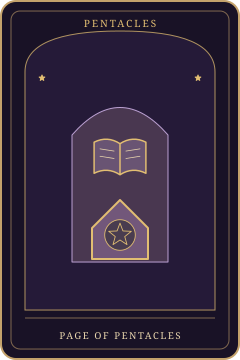

Card Meanings · A guide for reflection
Page of Pentacles Tarot Card Meaning

At a glance
Upright
The Page of Pentacles invites close attention to a practical subject you are ready to learn. A modest commitment can turn interest into understanding. What concrete skill or question would you like to work on first?
Reversed
Reversed, preparing to learn may have replaced actual practice, or the plan may be too broad to begin. What small task would let you use what you already know and discover the next real question?
Original symbolic illustration by Tarotfalcim. The guide below discusses the Rider–Waite–Smith tradition; this artwork is not a reproduction of that deck.
Page of Pentacles is part of the Pentacles suit of the Minor Arcana. Explore its upright and reversed meanings as possibilities for reflection, then compare them with your own circumstances.
Upright keywords
practical learning · attention · beginner's commitment · grounded curiosity
Reversed keywords
procrastination · unfocused study · unrealistic plans · unused knowledge
General Meaning
Upright
The Page of Pentacles invites close attention to a practical subject you are ready to learn. A modest commitment can turn interest into understanding. What concrete skill or question would you like to work on first?
Reversed
Reversed, preparing to learn may have replaced actual practice, or the plan may be too broad to begin. What small task would let you use what you already know and discover the next real question?
Love and Relationships Meaning
Upright
Dependable curiosity can help you learn how a relationship works in daily life. The card does not promise commitment from someone else. What practical question or small act of care would support mutual understanding?
Reversed
Good intentions may remain theoretical when ordinary follow-through is missing. What commitment can you realistically keep, and what expectation should you clarify before the relationship is built around a promise rather than an action?
As Feelings
Upright
The Page of Pentacles can reflect a careful interest that you want to explore through small, reliable steps. You may feel more comfortable learning about someone than making a large emotional claim. What modest invitation would give the connection room to become more familiar?
Reversed
You may like the idea of a connection while finding it difficult to give that interest practical attention. The reversal asks whether hesitation comes from inexperience, limited capacity, or a wish that has not become a real priority. What could you honestly offer without overstating your readiness?
Career Meaning
Upright
A course, task, or supervised opportunity may help you develop a useful skill. Examine the learning requirements. What would you like to be able to do, and what practice would demonstrate that ability?
Reversed
Collecting information without applying it can make progress difficult to assess. What small deliverable would reveal what you understand and where you need more instruction or feedback?
Finances Meaning
Upright
Reflect on your understanding of practical money concepts and the questions you hesitate to ask. The card does not provide investment expertise. Which term, fee, or obligation would you like explained clearly?
Reversed
An appealing financial lesson or plan may remain untested in your actual circumstances. What reliable source or appropriate adviser could help you distinguish useful knowledge from a general claim that may not apply?
Health and Wellbeing Meaning
Upright
For wellbeing, consider learning how to make an ordinary supportive routine easier to carry out. The card cannot prescribe treatment. What practical detail would help you begin at a manageable level?
Reversed
A complicated plan can make simple care feel unavailable until everything is organized. What smaller version could you try with current resources while keeping medical questions with appropriate professionals?
Symbolism
A young figure studies a pentacle held carefully in both hands above a green landscape, with worked earth and distant mountains nearby. The concentrated gaze gives a tangible object the full attention of a learner. The scene suggests patient investigation of something real, rather than a promise that possession of the symbol brings wealth or competence.
Symbolism notes refer to the Rider–Waite–Smith tradition. This library follows its Strength VIII and Justice XI numbering; other traditions differ. The decorative celestial illustrations on this website are original designs, not reproductions of that deck.
Read the card in context
In a learning position, choose a concrete skill. In a challenge position, examine preparation without practice. The Eight of Pentacles nearby can help turn curiosity into a repeatable learning task.
A perspective on yes or no
Supports practical study and a manageable commitment. It does not guarantee a job offer, financial gain, or mastery from planning alone.
Journal prompts
- What practical question do I want answered?
- What can I try with current resources?
- How will I know I have learned something useful?
A hypothetical reading example
Hypothetical example: a reader draws the Page of Pentacles while learning card correspondences and makes a small set of notes for one suit before attempting the whole deck.
Frequently asked questions
Does this Page mean I will receive money?
No. It can invite learning about an actual opportunity or resource, but it cannot predict gifts, income, or offers.
Is the Page of Pentacles only a student?
No. Anyone can adopt a beginner's attention to a practical skill, regardless of formal education, age, or existing experience.
What helps with the reversed card's procrastination theme?
Reduce the task to something observable, such as one example or short practice session, then review what you learned instead of redesigning the entire plan.
Put this meaning into practice
Try the Daily Reflection spread, learn how to read symbols, or return to all 78 card meanings.
Tarot is for learning, entertainment, and self-reflection. It does not establish facts about the future or replace medical, legal, or financial advice.